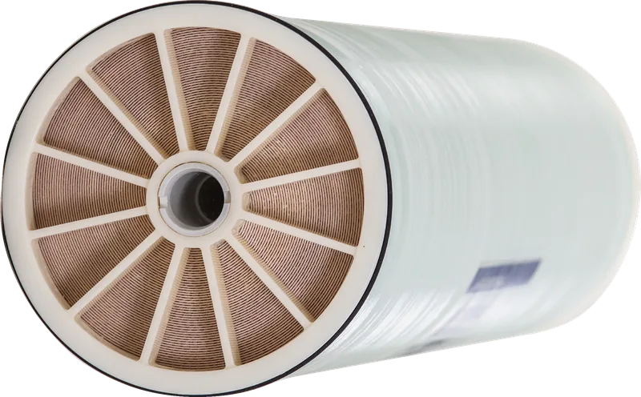

أغشية RO · NF · MBR · UF
مصمَّمة لأصعب المياه.
تصمّم HUAXIN وتصنع أغشية التناضح العكسي والترشيح النانوي وMBR والترشيح الفائق، المثبتة في مياه المناجم عالية الملوحة وعصارة المكبات ومحطات التصريف الصفري.

عنصر تناضح عكسي 8040 من HUAXIN · صورة استوديو
مرّر
داخل HUAXIN
من صفيحة الغشاء إلى العنصر المركّب.
لقطات حقيقية من خط إنتاجنا في جينينغ وصالة تجميع MBR ومحطة تناضح عكسي لدى أحد العملاء، إلى جانب رسوم متحركة توضّح ما يحدث داخل وحدة الترشيح الفائق من HUAXIN.
HUAXIN في لمحة
مصنّع أغشية أسسه خريجو تسينغهوا ويمتلك خط إنتاجه الخاص. من تركيب البوليمر إلى العنصر النهائي، العملية ملكنا، وكذلك مسؤولية أدائه.
المنتجات
تسعة خطوط. معيار واحد للأدلة.
تذكر كل صفحة منتج من HUAXIN ظروف الاختبار وحدود التشغيل والبيانات الميدانية الداعمة، ليحكم المهندسون على الملاءمة قبل أن يسألوا.

التناضح العكسي
خمسة خطوط للتناضح العكسي من الضغط المنخفض جدًا إلى مياه البحر، بمقاسي 4040 و8040 القياسيين.
- HX-XLP
- HX-LP
- HX-BW
- HX-BWFR
- HX-SW

الترشيح النانوي
تليين مياه الشرب وفصل الأملاح عن المواد العضوية صناعيًا.
- HX-HQ
- HX-BM

MBR والترشيح الفائق
وحدات MBR بإطار من الفولاذ المقاوم للصدأ وأعمدة ترشيح فائق من ألياف PVDF المجوفة.
- HX-MBR
- HX-UF
النتائج الميدانية
مقيس في المحطات، لا في الكتيّبات.
جنبًا إلى جنب مع علامات راسخة، على مياه تغذية لم تُصمَّم لها معظم الأغشية. نحجب أسماء المنافسين، لا ظروف التشغيل.
التطبيقات
أين تعمل أغشية HUAXIN اليوم.
ستة مجالات، كلٌّ منها مرتبط بالمنتجات والأدلة الداعمة له.
التصريف الصفري للسوائل
يركّز التناضح العكسي التيار قبل المعالجة الحرارية.
HX-BWFR · HX-SW · HX-BMDWمياه شرب عالية الجودة
يُليّن الترشيح النانوي الماء ويزيل المواد العضوية والملوثات الدقيقة مع الاحتفاظ بجزء من المعادن المفيدة؛ ويزيل الترشيح الفائق السابق له الجسيمات والكائنات الدقيقة.
HX-HQ · HX-UF · HX-XLPREUSEإعادة استخدام مياه الصرف البلدية
يستبدل MBR الترويق بالفصل الغشائي؛ ويصقل الترشيح الفائق والتناضح العكسي المقاوم للاتساخ المياه المعالجة لإعادة استخدامها.
HX-MBR · HX-UF · HX-BWFRSEAتحلية مياه البحر
تتولى عناصر التناضح العكسي لمياه البحر مرحلة التحلية، ويمكن استخدام العناصر نفسها حيث تُستخلص منتجات ثانوية عالية القيمة من المحلول المركّز.
HX-SWLiاستخلاص الليثيوم من البحيرات المالحة
يُصمَّم الترشيح النانوي الانتقائي والتناضح العكسي وفق كل محلول ملحي لتركيز الليثيوم وتقليل الاعتماد على المواد المازّة أو العوامل المساعدة.
HX-BM · HX-HQUPWمياه عالية النقاء للصناعة
يوفّر التناضح العكسي منخفض وفائق الانخفاض في الضغط رفضًا عاليًا للأملاح وتدفقًا عاليًا بوصفه جوهر التنقية متعددة المراحل.
HX-XLP · HX-LP · HX-BW منشأة HUAXIN
منشأة HUAXINالتصنيع
المواد الخام والمعدات والعمليات تحت سقف واحد.
بنى الفريق المؤسس خط إنتاج مستقلًا يدمج المواد الخام والمعدات والعمليات. وحددت المحاكاة الحاسوبية وتجارب العمليات المعاملات التي تحسم الأداء والإنتاجية على نطاق واسع.
- 10 ملايين m² من صفائح الأغشية سنويًا في جينينغ، شاندونغ
- دقة البثق الشقّي مضبوطة لصفائح مستقرة وقابلة للتكرار
- جميع فئات عناصر التناضح العكسي والترشيح النانوي إضافة إلى تجميع وحدات MBR
التكريمات
تقدير من لجان تحكيم الابتكار الدولية والصينية.
- الميدالية الذهبيةمعرض جنيف للاختراعات · 2026
- الجائزة الثالثةHICOOL العالمية · 2023
- الجائزة الثانية«Internet+» الصين، بكين · 2023
- أفضل عشرة فرقجامعة تسينغهوا · 2023
تحدّث إلى مهندس
أخبرنا عن مياهك.
أرسل تحليل مياه التغذية وأهدافك، وسيوصي مهندسو HUAXIN بالعنصر والتكوين المناسبين.